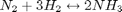
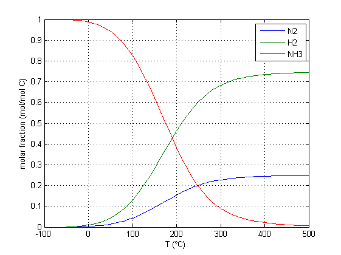
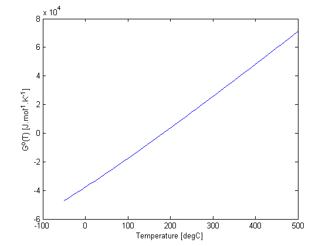
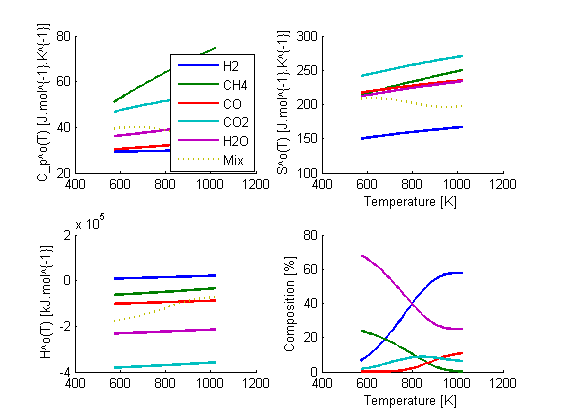
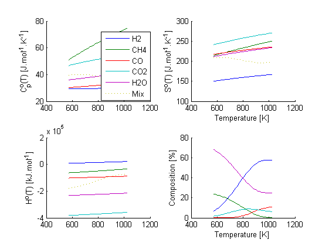

Introduction to the use of MediumModel class on Matlab
The MediumModel class is used for finding the equilibrium state of a mixture of reacting ideal gases over a range of temperatures, pressures and compositions. It can calculate various properties of individual gases and gas mixtures such and entropy and enthalpy. It can also plot the post reaction equilibrium composition of a mixture against temperature and includes methods to calculate and plot the Gibbs free energy of the system.
The model uses data compiled by NASA in the paper: NASA Glenn Coefficients for Calculating Thermodynamic Properties of Individual Species.
Bonnie J. McBride, Michael J. Zehe, and Sanford Gordon Glenn Research Center, Cleveland, Ohio
http://www.grc.nasa.gov/WWW/CEAWeb/TP-2002-211556.pdf
Contents
Example 1 - Instantiating a MediumModel Object
Example1 = MediumModel({'H2O'})
Example1 =
MediumModel handle
Properties:
gas: [1x1 struct]
names: {'H2O'}
cp_V: [801x1 double]
h_V: [801x1 double]
s_V: [801x1 double]
mu_V: [801x1 double]
cp: [801x1 double]
h: [801x1 double]
s: [801x1 double]
mu: [801x1 double]
mm_V: 18.0153
mm: [801x1 double]
index: [1x1 struct]
ln_kc: []
nu: []
Zeq: [801x1 double]
aeq: [801x1 double]
P: 100000
P0: 100000
Z: 1
X: [1x801 double]
T: [801x1 double]
notCondensed: 1
In this example, the model has only a single species. Later examples include more complex systems.
Class Properties
Defined by the user: (Using standard SI units)
- T - Temperature Range (Kelvin) Default - 801 values, ranging from 273.15K to 1073.15K
- Z - Initial molar fractions of each species Default-equal molar proportions
- X - Initial mass fractions of each species. This is calculated if Z is specified and vice versa
- nu - Stochiometry of defined chemical equations. Empty by default
- P0 -Atmospheric Pressure (Pascals) Default - 100,000Pa
- P -Pressure of reaction (Pascals) Default - 100,000Pa
Calculated based on user inputs: (All of these are matrices of values over the temperature range)
The model uses the strMaster database, stored in the IdealGases file to find the relevant values using polynomial approximations, as found by NASA, over the required temperature range.
- cp / cp_V - Specific heat capacity (J/mol K)
- h / h_V - Specific enthalpy (J/mol)
- s / s_V - Specific entropy (J/mol.K)
- mu / mu_V - Chemical potential (J/mol)
- mm / mm_V - Molar mass (g/mol)
- Zeq - Molar fractions of each species at equilibrium over the temperature range
The '_V' element of the parameters such as cp_V indicates that it is a vector. It differs from cp by that cp is the specific heat capacity of the mixture as a whole, while cp_V is a matrix showing the specific heat capacity of each individual species. Zeq is calculated after calling the SolveEq method, the others are properties obtained from the IdealGases database polynomial approximations.
Class Methods
Methods are used in the class to set values of properties, perform calculations and plot graphs:
Value setting methods
- setT -sets the object temperature range
- setP -sets the reaction and atmospheric pressures
- setNu -sets the object's chemical reation stochiometry
- setZ -sets the object's composition by moles
- setX -sets the object's composition by mass
Calculation methods
- gibbs - uses the Gibbs equation, g=h-Ts to calculate the enthalpy change of reaction for the specified stochiometry so the lowest free energy state can be calculated.
- solveEq - solves the relevant Gibbs equations to find the lowest free energy state and hence equilibrium proportions over the temperature range so the end results can be plotted.
- props - used to access the IdealGases database and uses the polynomial approximations to find the values of cp, h and s for the gases.
- moleToMassFractions - calculates relevant value by mass, if the user specifies values by moles
- massToMoleFractions - calculates relevant value by moles, if the user specifies values by mass
- findTFromH - calculates temperatures when enthalpies are specified
gibbs and solveEq are executed in Example2 and Example3 below. The remaining calculation methods are internal methods that aren't directly called by the user. moleToMassFractions, massToMoleFractions and findTFromH convert from one property to another as described, depending on which properties were initially defined by the user.
Graph plotting Methods
- plot
- gibbsplot
plot plots 4 graphs in one window, plotting each gas's cp, h, s and composition against temperature over the temperature range. gibbsplot produces two graphs, plotting free energy and equilibrium constant against temperature. gibbsplot is used in example2. plot is used in example3.
Example 2 - Modelling a Simple Reaction System
This example is a model of the Haber process reaction, used for making ammonia. The model will be used to find the resulting proportions of each gas at equilibrium during the reaction process over the temperature range -50- to 500°C.
Example2 = MediumModel({'N2', 'H2', 'NH3'});
This creates an object with the specified species included in the model, and must include all products and reactants.
Specify reaction conditions
The class requires 4 parameters to calculate how any reaction is expected to progress: Initial composition, stochiometry, temperature and pressure.
setZ (Composition)
The initial proportions of the species can be set by mass or molar relations. This example uses molar fractions. (Z)
Example2.setZ ([0.25, 0.75, 0]);
The proportions are defined in the same order as they are given in the class definition, as stored by the 'names' property and must sum to 1.00. (This example has 25% Nitrogen, 75% Hydrogen, 0% Ammonia)
setNu (Stochiometry)
The stochiometry of the chemical reactions must be specified in the model. In the example of the Haber process, the relevant reaction is:

Example2.setNu ([-1 -3 2]');
Reactants are given negative numbers, as they are used up, and products are given a positive number. This is also done using the same order as they were defined in the class. Note transpose operator, as each reaction is defined in its own column rather than row. Models with multiple reactions taking place can also be modeled using a nu matrix with additional columns, defining additional reactions. (See example 3)
setT (Temperature)
The model is often used to find the composition change over a range of temperatures, so the temperature is set as a range of values.
Example2.setT((-50:10:500)+273.15) ;
Here, the range is set from -50 to 500°C , in steps of 10°C.
setP (Pressure)
The reaction and atmospheric pressures are set as a default of 100,000Pa, but can be modified by changing the properties P and P0 of the object. Here, the reaction pressure is changed to 500,000Pa and the pressure of the environment is modified to a more accurate value of 101,325Pa. setP can be used in the form setP(P) to just change reaction pressure, or setP(P,P0) to change both values.
Example2.setP(500000,101325)
Solve calculations
|The following two commands complete the calculations to model the system, ready for data plotting.
Example2.gibbs; Example2.solveEq;
Output data and plotting
The Matrix Example2.Zeq holds the molar compositions of each species in each column of the matrix respectively, increasing in temperature, ready to be plotted against temperature using the code below.
figure plot(Example2.T-273.15,Example2.Zeq); legend(Example2.names); grid on; xlabel('T (°C)') ylabel('molar fraction (mol/mol C)')
Example2.gibbsPlot 
Example 3 - Steam Methane Reforming
This example will use the reforming reaction, which has two reactions taking place side by side.

Example3 = MediumModel({'H2','CH4','CO','CO2','H2O'});
Z=[0 1 0 0 2.8]';
Z=Z./sum(Z);
Example3.setZ(Z);
The object is defined with all required species, and the initial molar compositions are set by initially defining the proportions of each species, then dividing through by the sum to normalise the vector to sum to one as required.
Example3.setT([300:10:750]+273.15);
nu= [ [3 -1 1 0 -1]' ...
[1 0 -1 1 -1]'] ;
Example3.setNu(nu);
The nu matrix now has 2 columns, each with 6 rows, to represent the two reactions taking place. Remembering products +ve, reactants -ve
The method plot, used in Example 3, creates plots of cp, s, h and compostion against temperature, in one window
The Gibbs free energy and equilibrium composition are both calculated, then a plot made which is shown below.
Example3.gibbs; Example3.solveEq; Example3.plot